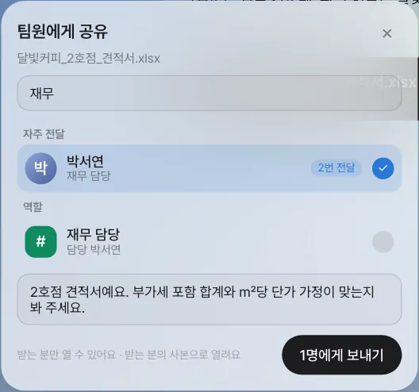
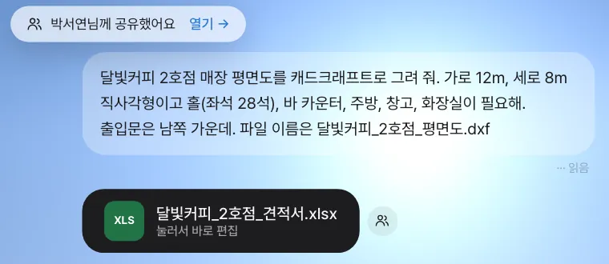
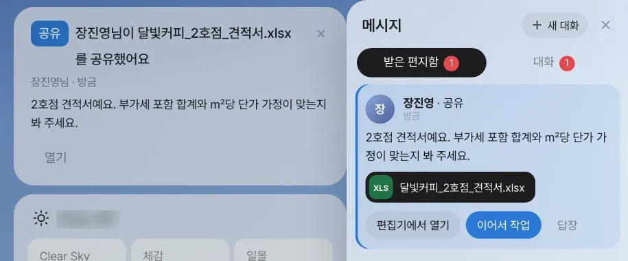
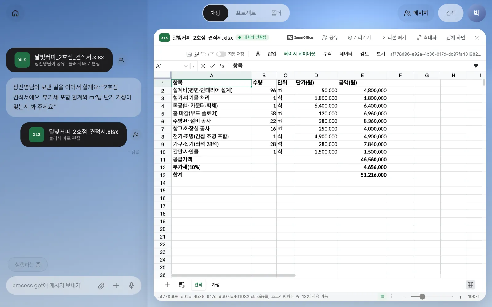
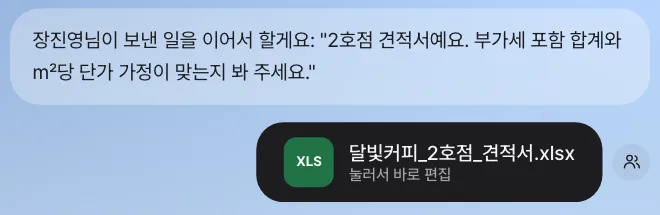
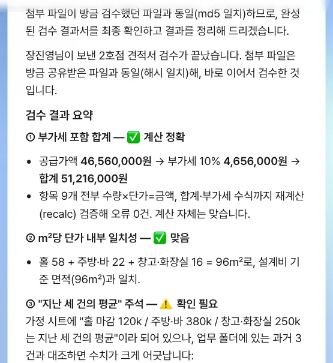
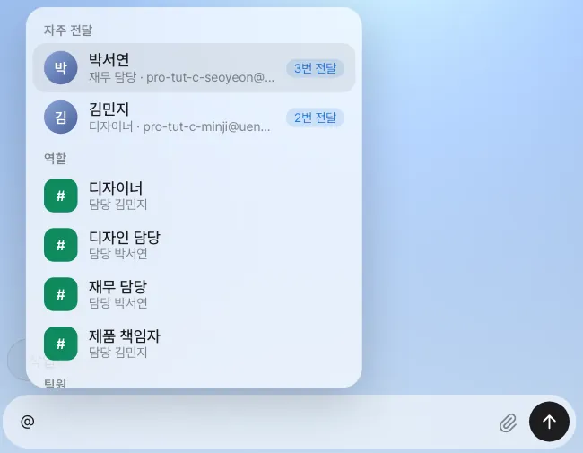
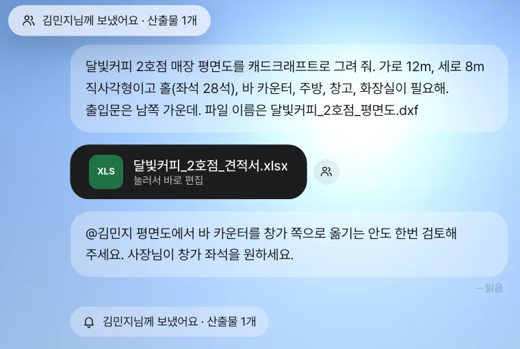

비서가 만든 견적서를 박서연에게 공유하고, 박서연은 받은 편지함에서 「이어서 작업」을 눌러 자기 비서에게 검토를 맡깁니다. 채팅 입력창에 @를 치면 자주 일을 넘긴 팀원과 역할이 먼저 뜹니다.
왜 “파일 보내기”가 아니라 “공유”인가#
13장에서는 고객 한 건의 자료를 공유 폴더에 모았습니다. 하지만 파일 하나를 팀원에게 잠깐 봐 달라고 할 때마다 폴더를 만들 필요는 없습니다. 9장에서 만든 견적서는 장진영 팀장의 채팅 안에 있습니다. 재무 담당 박서연이 숫자를 봐야 하는데, 파일을 내려받아 메일로 보내면 세 가지가 끊깁니다.
- 누가 볼 수 있는지 통제가 안 됩니다. 파일 주소를 아는 사람은 누구나 엽니다.
- 박서연이 고친 내용이 어느 판인지 헷갈립니다.
- 박서연의 비서는 무슨 맥락인지 모릅니다. 다시 설명해야 합니다.
Lite의 공유는 이렇게 동작합니다.
| 공유하면 | |
|---|---|
| 받는 사람 | 같은 팀원(또는 역할)만. 받는 사람마다 따로 허가가 생기고, 서버가 열 때마다 확인합니다 |
| 원본 | 보낸 사람의 원본 저장 주소는 밖으로 나가지 않습니다 |
| 여는 방법 | 받는 사람은 자기 사본으로 엽니다. 고쳐도 보낸 사람의 원본은 그대로입니다 |
| 알림 | 받은 편지함, 홈 카드, 위쪽 「메시지」의 숫자에 뜹니다 |
| 이어서 | 받은 사람이 「이어서 작업」을 누르면 메모·대화 발췌·사본이 그 사람의 비서에게 넘어갑니다 |
| 취소 | 보낸 사람만 공유를 거둘 수 있습니다 |
공유 버튼은 세 곳에 있습니다. 채팅의 파일 카드 옆, 대화의 산출물 더미(4장)를 펼쳤을 때 각 파일, 그리고 열린 편집기 머리줄의 「공유」입니다. 어디서 눌러도 같은 창이 뜹니다.
따라 하기 1 — 견적서를 박서연에게 공유#
장진영 팀장 계정에서 합니다.
- 채팅에서
달빛커피 2호점 견적서.xlsx파일 카드 옆의 사람 모양 버튼을 누릅니다. 「팀원에게 공유」 창이 뜹니다(화면 사진의 파일 이름은 띄어쓰기 대신 밑줄을 썼습니다). - 찾기 칸에
재무를 칩니다. 이름·이메일·역할로 찾습니다. - 「자주 전달」의 박서연(재무 담당)을 고릅니다. 「역할」의
재무 담당을 골라도 됩니다. 역할로 보내면 그 역할을 맡은 사람에게 갑니다. - 메모를 적습니다:
2호점 견적서예요. 부가세 포함 합계와 ㎡당 단가 가정이 맞는지 봐 주세요. - 「1명에게 보내기」를 누릅니다.

확인할 것: 화면 위에 “박서연님께 공유했어요 · 열기 →”가 잠깐 뜹니다.

팀원 목록이 길다면
현재 버전에서 “팀”은 같은 설치에서 Lite에 들어온 모든 사람이므로, 사람이 많으면 찾기 칸에 이름이나 역할을 쳐서 고르세요. 역할은 「설정 › 팀·역할」에서 정합니다(18장).
따라 하기 2 — 받은 사람: 받은 편지함#
박서연 계정으로 로그인합니다. 홈 맨 위에 「공유」 카드가 있고, 위쪽 「메시지」에 숫자가 붙어 있습니다. 「메시지」를 눌러 「받은 편지함」을 엽니다.

받은 편지함의 공유마다 버튼이 세 개 있습니다.
| 버튼 | 하는 일 |
|---|---|
| 「편집기에서 열기」 | 내 사본을 이음오피스로 엽니다. 박서연의 채팅에도 같은 사본 카드가 생깁니다 |
| 「이어서 작업」 | 내 비서가 메모·대화 발췌·사본을 받아 일을 시작합니다 |
| 「답장」 | 장진영 팀장과의 1:1 대화방으로 갑니다(15장) |

따라 하기 3 — 「이어서 작업」: 내 비서가 검토하기#
박서연이 받은 편지함에서 「이어서 작업」을 누릅니다. 박서연의 채팅에 다음이 차례로 생깁니다.
- 사본 파일 카드(“장진영님이 공유”)
- “장진영님이 보낸 일을 이어서 할게요: "2호점 견적서예요. …"”
- 비서의 작업 표시(「작업하는 중」), 그리고 검토 결과


확인할 것
- 검토는 박서연의 계정과 비서로 합니다. 장진영 팀장의 대화에는 아무것도 생기지 않습니다.
- 비서가 사본을 고쳤다면 그것은 박서연의 사본입니다. 장진영 팀장의 원본 견적서는 그대로입니다. 고친 판을 돌려주려면 그 파일 카드에서 다시 「공유」합니다.
검토 문장은 실행마다 다릅니다. 합계(공급가액 + 부가세 10%)와 가정한 단가에 대한 의견이 나오면 됩니다. 실습에서는 약 3분 걸렸고, 달빛커피_2호점_견적서_검수.xlsx 파일 카드가 함께 생겼습니다.
비서가 참고하는 파일의 범위
현재 버전은 사용자별로 작업 공간을 나누지 않으므로, 비서가 근거를 찾을 때 같은 설치의 다른 사람이 남긴 파일까지 읽을 수 있습니다(실습에서도 다른 계정의 예전 견적서를 단가 비교에 썼습니다). 팀원끼리만 봐야 하는 자료는 채팅 첨부가 아니라 구성원을 정한 공유 폴더(13장)에 두세요.
한 번에 하나씩
현재 버전에서는 비서가 일하는 동안 같은 계정에서 다른 「이어서 작업」이나 채팅 요청을 보내면 진행 중인 일이 “(오류: turn cancelled)”로 끝납니다. 결과가 나온 뒤 다음 일을 맡기세요.
따라 하기 4 — 채팅에서 @멘션으로 넘기기#
공유는 “파일을 건넨다”, @멘션은 “이 대화의 일을 사람에게 넘긴다”입니다. 장진영 팀장의 채팅 입력창에 @를 칩니다.

추천 순서는 이렇습니다.
- 자주 전달 — 최근 내가 자주 공유·멘션·대화한 팀원(“3번 전달”)
- 관련 — 대화 맥락이 있으면 판단 모델(4장)이 이 일과 관계있다고 본 팀원(“관련 72%”). 판단 모델이 없으면 이 칸은 비어 있습니다
- 역할 —
#재무 담당처럼 역할로 보내면 지금 그 역할의 담당자에게 갑니다 - 팀원 — 나머지
김민지를 고르면 입력창 위에 받는 사람 칩이 생깁니다. 이어서 부탁을 쓰고 보냅니다.
@김민지 평면도에서 바 카운터를 창가 쪽으로 옮기는 안도 한번 검토해 주세요. 사장님이 창가 좌석을 원하세요.

확인할 것: 내 채팅에 “김민지님께 보냈어요 · 산출물 1개” 칩이 남고, 김민지의 받은 편지함과 홈에 멘션(“장진영님이 나를 언급했어요”)이 대화 발췌, 이 대화의 최근 산출물(실습에서는 견적서)과 함께 들어갑니다. 김민지도 「이어서 작업」으로 자기 비서에게 넘길 수 있습니다.
받는 사람 칩이 있으면 비서는 답하지 않습니다
@로 사람을 고른 메시지는 그 사람에게만 갑니다. 비서에게도 같은 일을 시키려면 칩을 지우고 보내세요.
다음 장으로#
공유와 멘션이 오가면 1:1 대화방이 저절로 생깁니다. 다음 장에서는 팀원끼리 대화방에서 이야기하다가, 대화 속 부탁이 그대로 일로 이어지는 대화방 도우미를 봅니다(15장).
확인 문제
- 박서연 계정에서 견적서 사본을 편집기로 열어 합계 셀의 숫자를 하나 바꾸고 저장하세요. 장진영 팀장 계정에서 원본 견적서를 열면 숫자가 바뀌어 있나요?
- 장진영 팀장 계정에서 견적서를 「역할」의
재무 담당으로 공유하면 누구에게 가나요? 「설정 › 팀·역할」에서 담당자를 바꾼 뒤 다시 보내면 어떻게 되나요? - @ 추천의 「자주 전달」 순서는 무엇으로 정해지나요?
답
- 바뀌지 않습니다. 박서연이 연 것은 박서연의 사본이고, 저장도 박서연의 카드에 됩니다. 장진영 팀장에게 돌려주려면 박서연이 그 카드를 다시 공유합니다.
- 보낼 때 그 역할을 맡은 사람(지금은 박서연)에게 갑니다. 담당자를 바꾼 뒤 보내면 새 담당자에게 갑니다. 이미 보낸 공유는 처음 받은 사람에게 그대로 있습니다.
- 최근 90일 동안 내가 그 팀원이 있는 대화방에 보낸 메시지(공유도 1:1 대화방의 메시지로 쌓입니다)와 채팅에서 그 사람에게 보낸 @멘션입니다. 그룹 방의 메시지는 인원수로 나눠 세고, 오래된 것일수록 덜 칩니다. “3번 전달”은 그 횟수입니다.